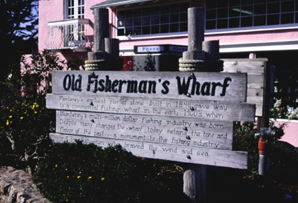

Old Fisherman's Wharf Sign. This is the sign that is posted at the entrance to Fisherman's Wharf. In the picture the sign is hard to read, but states "Monterey's earliest pier of stonebuilt in 1846 gave way to a commercial fishing wharf in the early 1900's when Monterey's mullti-million dollar fishing indusrty was born. Despite many changes the wharf today retains the tone and flavor of the past--- monument to the fishing industry and the fisherman who braved the wind and sea." The sign itself helps give visitors an idea of the wharf's rich history. The photograph was originally produced with late afternoon sun and a 35 mm camera using Provia slide film, shutter speed 125, F11. Photo copyright Andrea L. Arredondo, May 11, 2000.
Updated by Andrea Arredondo
5/19/00